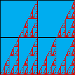
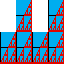
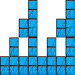
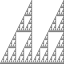
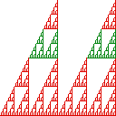
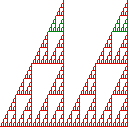

| We select squares of side lengths 1/2, 1/4,
1/8, ... , 1/2n, ... noting the scaling
of the Cantor set. |
|  |
|
 |
|
 |
| N(1/2) = 2 + 2 |
|
N(1/22) = 2⋅3 + 2⋅3 |
|
N(1/23) = 2⋅32 + 2⋅32 |
|
| and in general |
| N(1/2n) = 2⋅3n-1 + 2⋅3n-1 = 4⋅3n-1 |
| |
| Knowing N(1/3n) we can compute the box-counting dimension by
factoring out the larger term from the sum: |
| d | = limn→infinityLog(N(1/2n)) / Log(1/(1/2n)) |
| = limn→∞Log(4⋅3n-1) / Log(2n) |
| = limn→∞(Log(4) + Log(3n-1)) / Log(2n) |
| = limn→∞(Log(4) + (n-1)⋅Log(3)) / n⋅Log(2) |
| = Log(3)/Log(2) |
|
| |
| An alternate approach is to extend the Moran equation to infinite unions. |
| This union of two gaskets consists of |
|  |
|
 |
|
 |
| 2 copies scaled by 1/2 |
|
2 copies scaled by 1/4 |
|
2 copies scaled by 1/8 |
|
| and in general 2 copies scaled by 1/2n. |
| Extended to infinite unions, the Moran equation becomes |
| 1 = 2⋅((1/2)d) + 2⋅((1/4)d) + 2⋅((1/8)d) + ... |
| = 2⋅((1/2)d) + 2⋅(((1/2)d)2) + 2⋅(((1/2)d)3) + ... |
| = 2⋅((1/2)d)⋅(1 + (1/2)d + ((1/2)d)2 + ... ) |
| The bracketed terms are a geometric series. Summing it gives |
| = 2⋅((1/2)d)⋅(1/(1 - ((1/2)d))) |
| Cross-multiplying by 1 - (1/2)d we obtain |
| 1 - (1/2)d = 2⋅((1/2)d) |
| 1 = 3⋅((1/2)d) |
| 1/3 = (1/2)d |
|
| So again we have d = Log(3)/Log(2). |